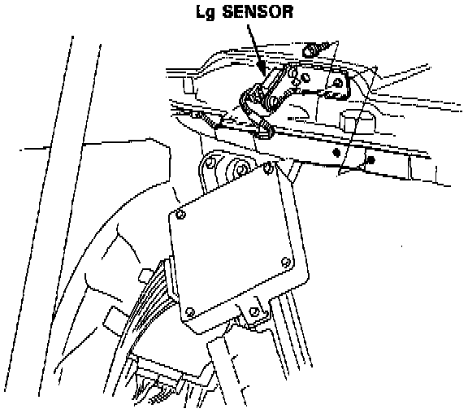
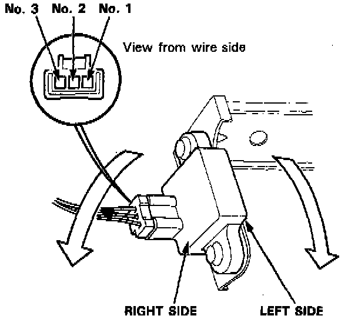

Lateral Accelerometer: Testing and Inspection
CAUTION: Be careful not to drop or bump the Lg sensor. The Lg sensor may be damaged if dropped or bumped hard.Remove the rear seat-back.
Remove the Lg sensor with its bracket from the body.

NOTE: Do not remove the Lg sensor from the bracket unless necessary.
Turn the ignition switch ON.

Measure the voltage between the No. 2 (+) and No. 3
(-) terminals with the connector connected. There should be approx. 2.5 V when the Lg sensor is vertical.
There should be approx. 1.5 V when the Lg sensor is horizontal with the left (bracket) side facing down. There should be approx. 3.5 V when the Lg sensor is horizontal with the right (connector) side facing down.